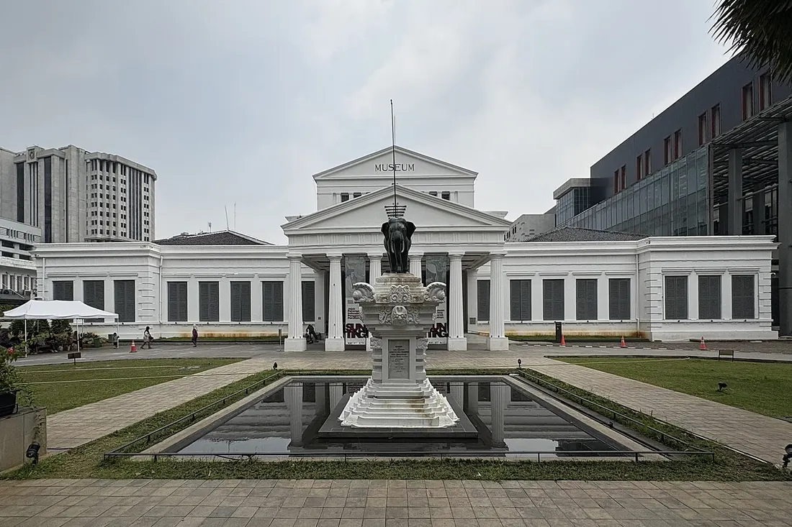

Национальный музей Индонезии
Джакарта, Индонезия
Старейший музей страны (1778), известный как «Музей Слона» из-за бронзовой статуи перед входом. Почти 200 000 артефактов: индуистско-буддийская скульптура, золото древних царств и этнографические коллекции всех островов архипелага.
Сайт музея